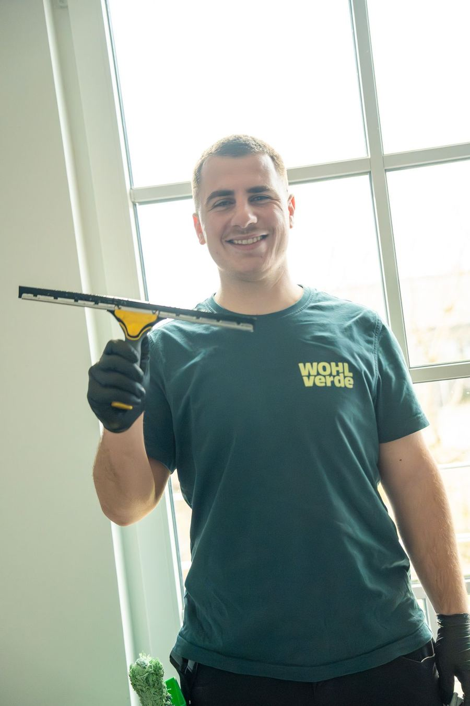

Gebäudereinigung & Grünpflege in Karlsruhe
Bürogebäude, Gewerbeflächen und Wohnanlagen in Karlsruhe brauchen Dienstleister, die verlässlich liefern. WOHLverde übernimmt Grünpflege, Gebäudereinigung und Hausmeisterservice mit festem Team und dokumentierten Abläufen.

Kurz gesagt: WOHLverde betreut Objekte in Karlsruhe mit eigenem, festangestelltem Team. Grünpflege, Gebäudereinigung, Hausmeisterservice und Winterdienst kommen aus einer Hand, mit festen Ansprechpartnern und dokumentierten Abläufen. Karlsruhe und das nördliche Umland gehören zu unserem Kerngebiet.
Alles, was Ihr Objekt braucht.
Ob Unterhaltsreinigung im Büro, Pflege von Firmengrün oder technische Objektbetreuung: In Karlsruhe arbeiten wir mit klaren Zuständigkeiten und nachvollziehbarer Qualität.
Regional, verlässlich, ohne Umwege.
Regional und schnell vor Ort
Kurze Wege, feste Ansprechpartner und schnelle Reaktionszeiten im Raum Bruchsal und Karlsruhe.
Festes Team, volle Qualitätskontrolle
Ausschließlich festangestellte, deutschsprachige Mitarbeitende. Keine Subunternehmen, kein Wechselpersonal.
Ganzheitliche Objektbetreuung
Grünpflege, Gebäudereinigung und technischer Objektservice greifen ineinander. Ein Partner, ein Ansprechpartner.
Planbare Qualität im laufenden Betrieb
Strukturiert, termintreu und dokumentiert. Leistungen sind klar definiert und dauerhaft nachvollziehbar.
Bietet WOHLverde Gebäudereinigung und Grünpflege in Karlsruhe an?
Ja. Karlsruhe gehört zu unserem Einsatzgebiet. Wir übernehmen dort Grünpflege, Gebäudereinigung, Hausmeisterservice und Winterdienst, einzeln oder als Gesamtpaket aus einer Hand.
Wie schnell ist WOHLverde in Karlsruhe vor Ort?
Karlsruhe gehört zu unserem Kerngebiet. Die genauen Einsatzzeiten und Reaktionszeiten legen wir beim Vor-Ort-Termin gemeinsam mit Ihnen fest.
Für welche Objekte in Karlsruhe ist WOHLverde der richtige Partner?
Für Bürogebäude, Gewerbe- und Industrieflächen, Wohnanlagen von Hausverwaltungen sowie kommunale Einrichtungen. Auf Anfrage betreuen wir auch Privatkunden.
Was kostet die Objektbetreuung in Karlsruhe?
Jedes Objekt ist anders. Nach einem Vor-Ort-Termin erhalten Sie ein transparent kalkuliertes Angebot mit klar definierten Leistungen. Der Termin ist für Sie unverbindlich.
Objekt in Karlsruhe? Wir schauen es uns an.
Erzählen Sie uns kurz, worum es geht. Wir melden uns in der Regel innerhalb eines Werktags und vereinbaren einen Vor-Ort-Termin.